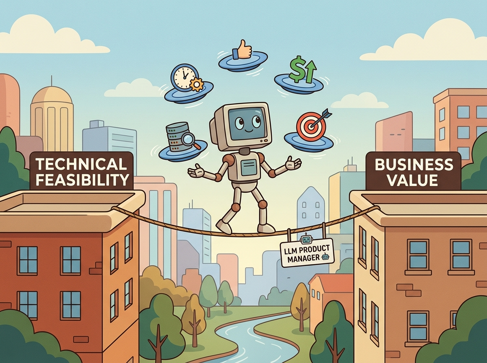

Your users do not care about your model's benchmark scores. They care about whether the product solves their problem before they lose patience.
A Pragmatic Compass, User-Centric AI Agent
LLM products are fundamentally different from traditional software products because their outputs are probabilistic, non-deterministic, and occasionally wrong in unpredictable ways. A product manager for an LLM application must navigate challenges that do not exist in conventional software: Section 32.2 risk that varies by topic, latency that depends on output length, costs that scale with usage in non-obvious ways, and user expectations shaped by consumer AI tools. This section covers the unique product management skills needed to ship LLM-powered products (building on the agent architectures from Section 22.1 and the evaluation practices from Chapter 29) that delight users while managing the inherent risks of generative AI.
Prerequisites
Before starting, make sure you are familiar with strategy from Section 33.1, the prompt engineering patterns from Section 11.1 (which influence product design decisions), and the Section 29.1 that define product success metrics.

33.2.1 Translating Business Problems to LLM Requirements
A VP of Sales says "we want an AI chatbot for our customers." Does that mean a FAQ bot? A full order-management assistant? A lead qualification system? Each interpretation implies a completely different architecture, data pipeline, and risk profile. The first step in LLM product management is converting vague business requests into precise requirements that engineering can build against, and getting that translation wrong is the most expensive mistake a product team can make.
In post-mortems of failed LLM product launches, the most common root cause is not a technical failure. It is a requirements misunderstanding where the business wanted a search engine and the team built a chatbot, or vice versa. The hardest part of LLM product management is the "P" in "PM," not the "LLM."
Translating business problems to LLM requirements is like an architect converting "I want a nice house" into blueprints. The client says "nice," but the architect must ask: how many bedrooms, what climate, what budget, what lot size? Similarly, "we want an AI chatbot" must be decomposed into latency requirements, accuracy thresholds, risk tolerance, data sources, and user personas before a single line of code is written. The difference from physical architecture: LLM "buildings" can be iteratively remodeled after occupancy far more cheaply than physical ones.
The Requirements Translation Framework
This snippet translates business requirements into a structured technical specification for an LLM-powered feature.
# Define RiskLevel, LLMProductSpec; implement model_tier_recommendation
# Key operations: training loop, results display, safety guardrails
from dataclasses import dataclass, field
from typing import List, Optional
from enum import Enum
class RiskLevel(Enum):
LOW = "low" # Wrong answer is inconvenient
MEDIUM = "medium" # Wrong answer causes rework
HIGH = "high" # Wrong answer causes financial or legal harm
CRITICAL = "critical" # Wrong answer endangers safety
@dataclass
class LLMProductSpec:
"""Structured LLM product specification."""
name: str
user_persona: str
job_to_be_done: str
# Functional requirements
input_types: List[str] # text, image, document, audio
output_format: str # free text, structured JSON, classification
max_latency_seconds: float
context_window_needs: str # "short" (<4K), "medium" (4-32K), "long" (>32K)
# Risk and quality
hallucination_risk: RiskLevel
requires_citations: bool
human_review_required: bool
accuracy_target: float # 0.0 to 1.0
# Scale
daily_requests_estimate: int
concurrent_users_peak: int
# Constraints
data_residency: Optional[str] = None # "US", "EU", etc.
pii_handling: str = "none" # "none", "redact", "allowed"
def model_tier_recommendation(self) -> str:
if self.hallucination_risk in (RiskLevel.HIGH, RiskLevel.CRITICAL):
return "Frontier model (GPT-4o, Claude 3.5 Sonnet) with guardrails"
elif self.context_window_needs == "long":
return "Long-context model (Gemini 1.5 Pro, Claude 3.5)"
elif self.daily_requests_estimate > 10000:
return "Fine-tuned small model (Llama 3.1 8B) for cost efficiency"
else:
return "Mid-tier model (GPT-4o-mini, Claude 3.5 Haiku)"
# Example: Customer support copilot
spec = LLMProductSpec(
name="Support Copilot",
user_persona="Tier-1 support agent handling billing and account inquiries",
job_to_be_done="Draft accurate responses to customer tickets using knowledge base",
input_types=["text", "document"],
output_format="free text with inline citations",
max_latency_seconds=3.0,
context_window_needs="medium",
hallucination_risk=RiskLevel.HIGH,
requires_citations=True,
human_review_required=True,
accuracy_target=0.92,
daily_requests_estimate=5000,
concurrent_users_peak=200,
data_residency="US",
pii_handling="redact",
)
print(f"Product: {spec.name}")
print(f"Model recommendation: {spec.model_tier_recommendation()}")
print(f"Accuracy target: {spec.accuracy_target:.0%}")# Define LLMProductMetrics; implement health_check
# Key operations: results display, health checking, monitoring and metrics
from dataclasses import dataclass
@dataclass
class LLMProductMetrics:
"""Weekly metrics dashboard for an LLM product."""
# Model quality
accuracy: float
hallucination_rate: float
latency_p95: float
# Product usage
csat: float
adoption_rate: float
edit_rate: float
# Business impact
resolution_rate: float
deflection_rate: float
cost_per_resolution: float
def health_check(self) -> dict:
return {
"accuracy": "PASS" if self.accuracy >= 0.85 else "FAIL",
"hallucination": "PASS" if self.hallucination_rate < 0.05 else "FAIL",
"csat": "PASS" if self.csat >= 4.0 else "WARN",
"adoption": "PASS" if self.adoption_rate >= 0.60 else "WARN",
"deflection": "PASS" if self.deflection_rate >= 0.40 else "WARN",
}
# Week 8 metrics for Support Copilot
week8 = LLMProductMetrics(
accuracy=0.91, hallucination_rate=0.03, latency_p95=2.8,
csat=4.2, adoption_rate=0.72, edit_rate=0.24,
resolution_rate=0.76, deflection_rate=0.38, cost_per_resolution=4.20
)
for metric, status in week8.health_check().items():
print(f" {metric:15s} {status}")The "build vs. buy" decision for LLM capabilities is fundamentally different from traditional software. API providers update their models frequently, so the fine-tuned model you spent months building might be outperformed by a newer API model next quarter. The strategic question is not "can we build it?" but "will our advantage persist as foundation models improve?"
This distinction between model quality and product quality is one of the most important lessons in LLM product development. The evaluation metrics from Chapter 29 measure model quality; product metrics measure whether that quality translates into user value. A model upgrade that improves MMLU scores by 3% but increases latency by 500ms may actually degrade the user experience. Product design requires optimizing across all dimensions simultaneously, which is why the multi-layer metrics framework below is essential.
Ship your LLM product with a visible "thumbs up / thumbs down" button on every response from day one. This costs almost nothing to implement, gives you a real-time quality signal, and builds a dataset of user-validated good and bad responses that becomes invaluable for prompt tuning and fine-tuning later. Teams that skip inline feedback spend months guessing what users actually think.
33.2.2 Success Metrics for LLM Products
LLM products require a layered metrics framework that captures quality at the model level, product level, and business level. Focusing on only one layer leads to blind spots: a model with 95% accuracy is useless if users do not trust it, and high user satisfaction means nothing if the product does not reduce costs.
| Layer | Metric | Definition | Target Range |
|---|---|---|---|
| Model Quality | Accuracy | Fraction of outputs rated correct by evaluators | 0.85 to 0.95 |
| Hallucination Rate | Fraction of outputs containing fabricated facts | < 0.05 | |
| Latency (P95) | 95th percentile response time in seconds | < 5.0s | |
| Product Usage | CSAT | Customer satisfaction score (1 to 5 scale) | > 4.0 |
| Adoption Rate | Fraction of eligible users actively using the product | > 0.60 | |
| Edit Rate | Fraction of AI outputs modified by users before sending | < 0.30 | |
| Business Impact | Resolution Rate | Fraction of issues resolved without escalation | > 0.70 |
| Deflection Rate | Fraction of inquiries handled without human agent | > 0.40 | |
| Cost per Resolution | Total cost divided by resolved issues | 50% reduction |
The edit rate is one of the most underrated LLM product metrics. If users accept AI-generated outputs without modification more than 70% of the time, the product is genuinely saving time. If users edit most outputs, the product may actually be slower than manual work because users must read, evaluate, and correct the AI's suggestions. Track edit rate weekly and investigate any upward trends.
33.2.3 Hallucination Risk Management
Hallucination is the defining risk of LLM products. Unlike bugs in traditional software, hallucinations are not deterministic: the same input can produce correct output 99 times and a confidently stated falsehood on the 100th. Product managers must design systems that minimize hallucination occurrence and mitigate its impact when it does occur. Figure 33.2.2 shows a four-layer defense strategy that addresses hallucination at every level.
Never rely on a single hallucination defense. Each layer has failure modes: RAG retrieval (recall the retrieval pipelines from Chapter 20) can return irrelevant documents, fact-checking can miss novel claims, confidence scoring has blind spots on fluent but wrong outputs, and human reviewers suffer from automation bias (trusting AI outputs because "the AI said so"). Defense in depth is essential because no single technique achieves zero hallucination rate.
33.2.4 UX Design for LLM Products
LLM products need UX patterns that manage uncertainty, set appropriate expectations, and give users control over AI-generated content. The following patterns have emerged as best practices across successful AI products.
Core UX Patterns
| Pattern | Description | When to Use |
|---|---|---|
| Progressive Disclosure | Show summary first; expand details on demand | Long-form generation (reports, analysis) |
| Inline Citations | Link each claim to its source document | Any product where accuracy is critical |
| Confidence Indicators | Visual cues (color, icons) for AI confidence level | Decision-support tools, recommendations |
| Editable Drafts | Present AI output as a draft that users can modify | Content creation, email drafting, code suggestions |
| Thumbs Up/Down Feedback | One-click quality feedback on each response | Every LLM product (essential for continuous improvement) |
| Graceful Fallback | Route to a human when AI cannot answer confidently | Customer-facing applications |
# Define AIResponse; implement confidence_label, ux_treatment
# Key operations: results display
from dataclasses import dataclass
from typing import List, Optional
@dataclass
class AIResponse:
"""Structured AI response with UX metadata."""
content: str
confidence: float # 0.0 to 1.0
citations: List[dict] # [{source, page, text}]
suggested_actions: List[str]
requires_human_review: bool
def confidence_label(self) -> str:
if self.confidence >= 0.85:
return "high_confidence"
elif self.confidence >= 0.60:
return "medium_confidence"
else:
return "low_confidence"
def ux_treatment(self) -> dict:
label = self.confidence_label()
return {
"high_confidence": {
"border_color": "#27ae60",
"icon": "check_circle",
"disclaimer": None,
},
"medium_confidence": {
"border_color": "#f39c12",
"icon": "info",
"disclaimer": "This response may need verification.",
},
"low_confidence": {
"border_color": "#e94560",
"icon": "warning",
"disclaimer": "Low confidence. Please verify before using.",
},
}[label]
response = AIResponse(
content="Based on your policy, the refund window is 30 days from purchase.",
confidence=0.72,
citations=[{"source": "refund_policy_v3.pdf", "page": 2}],
suggested_actions=["Send to customer", "Edit draft", "Escalate"],
requires_human_review=True,
)
print(f"Confidence: {response.confidence_label()}")
print(f"UX treatment: {response.ux_treatment()}")33.2.5 Iterative Delivery for LLM Products
LLM products benefit from a delivery cadence that is faster and more experimental than traditional software. Because model behavior can change with prompt modifications (no code deploy required), product teams can iterate on quality much faster than conventional feature development allows. Figure 33.2.3 depicts this rapid iteration cycle.
33.2.6 Stakeholder Communication
Communicating LLM product progress to non-technical stakeholders requires translating model metrics into business language. The following template provides a structure for weekly stakeholder updates that avoids jargon while maintaining technical accuracy.
# implement generate_stakeholder_update
# Key operations: results display, health checking, monitoring and metrics
def generate_stakeholder_update(metrics: LLMProductMetrics, week: int) -> str:
"""Generate a non-technical stakeholder update from product metrics."""
health = metrics.health_check()
passing = sum(1 for v in health.values() if v == "PASS")
total = len(health)
update = f"""
WEEKLY UPDATE: Support Copilot (Week {week})
STATUS: {passing}/{total} metrics on target
HIGHLIGHTS:
- Customer satisfaction: {metrics.csat}/5.0 (target: 4.0)
- Tickets resolved without escalation: {metrics.resolution_rate:.0%}
- AI-assisted deflection: {metrics.deflection_rate:.0%} (target: 40%)
- Cost per resolution: ${metrics.cost_per_resolution:.2f}
QUALITY:
- Response accuracy: {metrics.accuracy:.0%}
- Factual errors (hallucinations): {metrics.hallucination_rate:.1%}
- Agent edit rate: {metrics.edit_rate:.0%} of AI drafts modified
ACTIONS:
"""
if metrics.deflection_rate < 0.40:
update += "- Deflection below target; expanding knowledge base coverage\n"
if metrics.edit_rate > 0.30:
update += "- High edit rate; investigating prompt quality for top categories\n"
if metrics.hallucination_rate >= 0.05:
update += "- Hallucination rate elevated; adding source verification step\n"
return update.strip()
print(generate_stakeholder_update(week8, 8))Notice that the stakeholder update uses percentages and dollar amounts, not model-level metrics like perplexity or F1 scores. Executives care about whether the product is reducing costs, improving satisfaction, and operating safely. Translate every technical metric into its business equivalent before presenting it to non-technical audiences.
1. Why does the product spec recommend a frontier model for the Support Copilot rather than a fine-tuned small model?
Show Answer
2. What does the "edit rate" metric tell you about an LLM product's effectiveness?
Show Answer
3. Name the four layers of hallucination defense described in this section.
Show Answer
4. Why should stakeholder updates avoid technical jargon like "perplexity" or "F1 score"?
Show Answer
5. What is the recommended iteration cycle length for LLM products, and why is it shorter than traditional software?
Show Answer
Who: A product manager and UX designer at a customer service platform company
Situation: The company launched an AI-powered response drafting feature for support agents. The LLM generated draft replies that agents could send directly or edit.
Problem: Agents reported that they could not tell which drafts were reliable and which needed heavy editing. Some agents sent low-quality drafts without reviewing them, leading to customer complaints. Others stopped trusting the feature entirely and ignored all suggestions.
Dilemma: Removing the feature would waste three months of development. Making all drafts require explicit approval would slow agents down so much that the productivity gain would disappear.
Decision: They implemented confidence-tiered UX: high-confidence responses (above 0.85) displayed with a green border and a "Send" button; medium-confidence responses (0.60 to 0.85) showed a yellow border with "Review and Edit"; low-confidence responses (below 0.60) showed a red border with "Needs significant editing."
How: Confidence was computed using self-consistency across three samples plus RAG retrieval relevance scores. The UX treatment was determined by the AIResponse.ux_treatment() pattern from the product spec.
Result: Agent adoption rose from 34% to 78% within two weeks. Customer satisfaction on AI-assisted tickets matched human-only tickets. Average handling time dropped 42% because agents quickly identified which drafts to trust.
Lesson: Users need visible confidence signals to calibrate their trust in AI outputs. Without them, adoption polarizes into blind trust (causing errors) or blanket rejection (wasting the investment).
- Structured specs prevent scope creep: The LLMProductSpec template forces explicit decisions about risk level, latency, accuracy targets, and data handling before development begins.
- Metrics must be layered: Track model quality, product usage, and business impact separately. A high-accuracy model that nobody uses delivers zero value.
- Hallucination requires defense in depth: Grounding, validation, confidence scoring, and human review each catch different failure modes. No single layer is sufficient.
- UX must manage uncertainty: Confidence indicators, editable drafts, inline citations, and graceful fallbacks build user trust in probabilistic systems.
- Iterate fast on prompts: The 1 to 2 week evaluation/tuning/testing/shipping cycle leverages the unique advantage of LLM products: behavior changes without code deploys.
- Speak business language: Translate every technical metric into dollars, percentages, or satisfaction scores before presenting to stakeholders.
Agree on 2 to 3 measurable success metrics (task completion rate, user satisfaction score, cost per interaction) with stakeholders before writing code. Without predefined metrics, "good enough" becomes a moving target that delays launches indefinitely.
Open Questions:
- How should product metrics change when LLMs are a core component? Traditional engagement metrics may not capture whether AI-generated outputs are actually useful or just consumed passively.
- What is the right product development cadence for LLM features when model updates can change application behavior unexpectedly?
Recent Developments (2024-2025):
- Product frameworks specifically for AI-powered features (2024-2025) emerged from companies like Anthropic, Google, and Notion, emphasizing metrics like task completion rate and trust calibration over traditional engagement metrics.
Explore Further: Define a set of product metrics for an LLM-powered feature that go beyond basic usage counts. Include measures of output quality, user trust, and task completion. Track them over a two-week period if possible.
Exercises
A VP of Sales says "we need an AI chatbot for our customers." Decompose this vague request into five specific product requirements, including functional requirements, quality attributes, and constraints.
Answer Sketch
(1) Functional: the chatbot answers product questions using the product catalog as a knowledge base. (2) Functional: it escalates to a human agent when it cannot answer or the customer requests it. (3) Quality: response accuracy must exceed 90% on a curated FAQ test set. (4) Quality: average response time under 3 seconds. (5) Constraint: must not make pricing commitments or process orders without human approval. Each requirement is testable, measurable, and addresses a specific aspect of the vague request.
Design the user experience for an LLM-powered email drafting tool. Address: how to handle hallucinated facts in drafts, how to manage user trust, and how to design the interface so users review rather than blindly send AI-generated content.
Answer Sketch
Hallucination handling: highlight any factual claims with low confidence in yellow, link to source documents where available. Trust management: show a brief "AI-generated draft" badge and a confidence score. Review encouragement: (1) require a manual "review and edit" step before the send button becomes active, (2) highlight sections that differ from the user's typical writing style, (3) show a checklist of items to verify (names, dates, numbers, commitments). The goal is "AI as co-writer" not "AI as auto-sender."
You have 10 feature requests for an LLM chatbot and engineering bandwidth for 4. Describe a prioritization framework that accounts for user impact, technical feasibility, risk, and strategic alignment. Apply it to rank these features: multi-language support, voice input, document upload, conversation history, admin dashboard.
Answer Sketch
Framework: score each feature on impact (1-5), feasibility (1-5), risk (1-5, inverted), alignment (1-5). Weighted sum with impact having highest weight. Ranking: (1) Conversation history (high impact, easy, low risk). (2) Admin dashboard (medium impact, medium feasibility, high alignment for operations). (3) Document upload (high impact for knowledge workers, medium feasibility). (4) Multi-language support (high impact but high complexity). (5) Voice input (nice-to-have, high complexity). Ship 1-4, defer voice input to a future sprint.
Create a failure mode matrix for an LLM customer support product. For each failure mode (hallucination, latency spike, model outage, offensive output), define the severity, likelihood, user-facing behavior, and recovery strategy.
Answer Sketch
Matrix: (1) Hallucination: severity=high, likelihood=medium, user behavior="I'm not confident about this answer. Let me connect you with a human agent," recovery=escalate. (2) Latency spike: severity=medium, likelihood=medium, user behavior="show typing indicator with time estimate," recovery=use cached responses for common queries. (3) Model outage: severity=high, likelihood=low, user behavior="redirect to FAQ page or human queue," recovery=failover to backup provider. (4) Offensive output: severity=critical, likelihood=low, user behavior="block output, apologize, log for review," recovery=output guardrail filter.
Traditional software products use metrics like DAU, retention, and conversion rate. What additional metrics does an LLM product need? Design a metrics framework with 3 categories: quality, efficiency, and business impact. Include at least 3 metrics per category.
Answer Sketch
Quality: (1) response accuracy (human-evaluated sample), (2) hallucination rate (automated detection), (3) user satisfaction (thumbs up/down ratio). Efficiency: (1) cost per query (API tokens x pricing), (2) average latency (TTFT and total), (3) deflection rate (queries resolved without human escalation). Business impact: (1) support ticket volume reduction, (2) customer NPS change, (3) time saved per employee per week. Track all metrics daily, report weekly, and set quarterly targets. The key difference from traditional products is the quality category, which does not exist for deterministic software.
What Comes Next
In the next section, Section 33.3: ROI Measurement & Value Attribution, we tackle ROI measurement and value attribution, quantifying the business impact of LLM investments.
References & Further Reading
Cagan, M. (2017). Inspired: How to Create Tech Products Customers Love. Wiley.
The definitive guide to modern product management, covering discovery, delivery, and cross-functional team dynamics. Its principles for managing uncertainty apply directly to the non-deterministic nature of LLM products. Required reading for product managers transitioning to AI-powered products.
Nielsen Norman Group. (2023). AI and UX: Guidelines for Human-AI Interaction.
Research-backed UX guidelines for AI-powered interfaces, covering user expectations, error handling, and trust calibration. Addresses the unique challenges of designing for probabilistic systems. Essential for UX designers and product managers working on LLM interfaces.
Microsoft. (2019). Guidelines for Human-AI Interaction. CHI 2019.
Eighteen design guidelines for human-AI interaction derived from large-scale research, organized by interaction phase. Covers initial expectations, during interaction, when things go wrong, and over time. Foundational reference for designing AI-powered user experiences.
Amershi, S. et al. (2019). Software Engineering for Machine Learning: A Case Study. ICSE-SEIP 2019.
Case study from Microsoft on the unique software engineering challenges of ML systems, including data management, testing, and deployment. Identifies nine key differences between ML and traditional software development. Valuable for engineering managers planning LLM product development processes.
The HELM framework for comprehensive LLM evaluation across accuracy, calibration, robustness, fairness, and efficiency dimensions. Provides standardized scenarios and metrics for comparing models. Important reference for teams defining success criteria for LLM products.
Studies how AI explanations affect human-AI team performance, finding that explanations do not always improve outcomes. Challenges assumptions about explainability's value in collaborative settings. Relevant for product managers deciding how much model reasoning to expose to users.